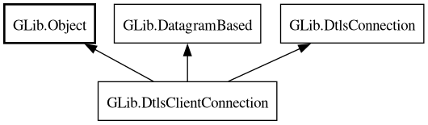

DtlsClientConnection
Object Hierarchy:

Description:
[
CCode ( type_cname =
"GDtlsClientConnectionInterface" , type_id =
"g_dtls_client_connection_get_type ()" ) ]
[
Version ( since =
"2.48" ) ]
public interface DtlsClientConnection :
Object,
DatagramBased,
DtlsConnection
Content:
Properties:
Static methods:
Methods:
Inherited Members:
All known members inherited from class GLib.Object
All known members inherited from interface GLib.DatagramBased
All known members inherited from interface GLib.DtlsConnection